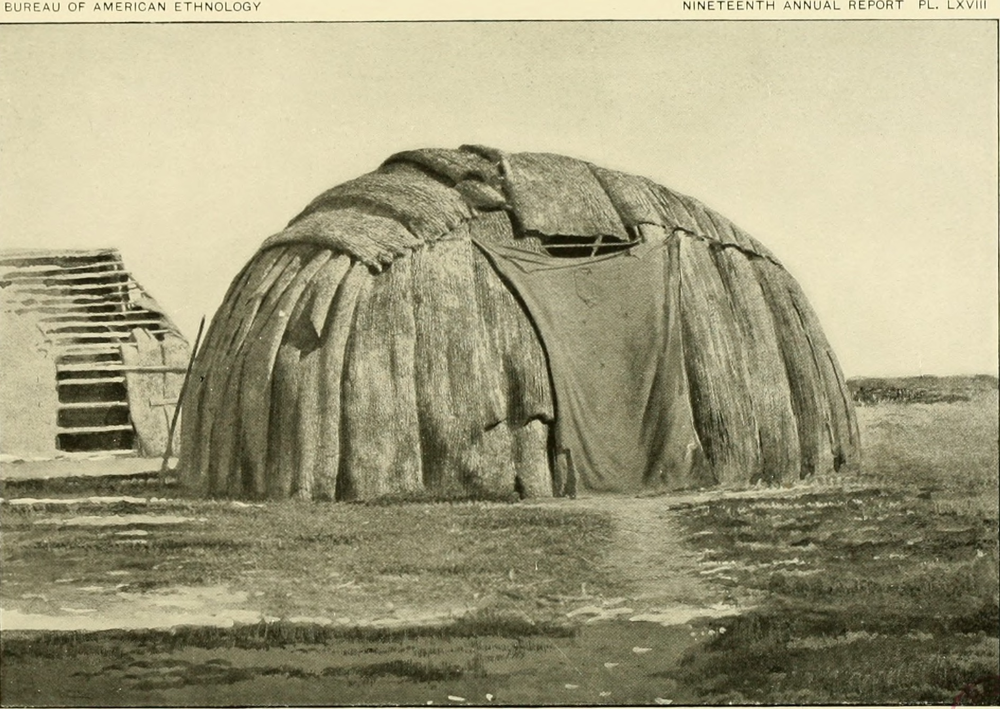

第 6 章
哈佛综述的诞生
《新英格兰医学杂志》1967年7月号第277卷第3期的目录页上，第5条标题占据了三行。它排在论著栏目的后半部，不如首篇位置的临床试验显眼，但也绝不隐蔽。标题的全称是《膳食中的脂肪与碳水化合物同动脉粥样硬化之间的关联》，作者署名弗雷德里克·斯泰尔、马克·赫格斯特德、罗伯特·麦甘迪，机构标注为哈佛公共卫生学院营养系。
这一期的杂志被保存于全球数百个医学院图书馆的书架上。翻开那页目录，读者会看到这篇文章被嵌入一系列互不相干的研究之间——前面是一篇关于肾脏移植排斥反应的临床报告，后面是一篇关于医院感染控制的流行病学调查。在一本以临床医学为核心的期刊里，营养学的综述文章通常只是陪衬。

但这一篇不会以陪衬的身份过完它的学术生命。斯泰尔的名字排在作者栏的第一位。
他把这篇综述定位为一篇文献评估。它的引言部分没有提出新的假说，而是交代了一个任务：在关于动脉粥样硬化的膳食病因研究中，脂肪假说和碳水化合物假说各有支持者，现有文献需要一个系统的梳理。这就是那个战略的第一个可见成果——一篇综述，即将从基金会的档案柜外，进入公共的学术视野。
文章的写法从头到尾都在遵守综述文体的规范——定义检索范围，排序研究质量，给出加权的结论。它没有读起来像是一份辩护状。它读起来像是一份工作。三位作者花了数月时间检索、分类、分析、措辞，然后投稿，经历同行评议，收到修改意见，提交定稿。每一个步骤都在正常的科学流程之内。
这篇综述从印刷厂出来之后的扩散速度，超过了《新英格兰医学杂志》编辑部对一篇营养学综述的常规预期。美国心脏协会的营养委员会在次年的背景文件中引用了它。农业部在膳食目标草案的技术附录中保留了它的位置。国会议员的公共卫生助理在简报夹里收到了一份抽印本。食品公司的研究主管在行业通讯中读到它的结论摘要。
不是每一篇医学期刊上的综述都能走到这个位置。大多数综述留在学术引用的封闭循环里，被同一领域的同行引用三四十次，然后被更新、被覆盖、被遗忘。
这一篇越过了那道边界。它变成了一个参考点——不只是在科学引文中，而且在政策制定中，在媒体报道中，在产业传播中。
它的影响不在于说出了此前无人知晓的新事实。它没有报告新数据，没有提出新假说，也没有推翻经典结论。它的影响在于，当一个正在形成中的政策共同体需要一个科学依据时，这篇文章刚好以顶级期刊的权威形式提供了那个依据。在此后的二十年间，它被反复引用为一个确定性陈述：科学界的主流观点认为，膳食脂肪与冠心病之间存在密切关联。这个确定性陈述本身就是这篇文章最重要的产品。
但它的生产过程，需要从1965年说起。那一年，弗雷德里克·斯泰尔的实验室正进入一个瓶颈期。他主持的课题方向是碳水化合物负荷与大鼠脂肪合成的代谢关系。实验需要的动物组数超出了常规预算能覆盖的范围。哈佛公共卫生学院的内部拨款有自己的优先级排序——慢性病流行病学、环境卫生、医疗管理，实验营养学不总是在顶层。斯泰尔需要外部资金。
他写了一份研究计划书，题目落在代谢机制层面，不涉及人类心脏病的因果推断，更不涉及膳食指南的制定。它是一份基础研究提案。
这份计划书通过了常规的学术渠道，被送到了糖业研究基金会的科学顾问委员会。基金会给出的回应是批准资助。具体的金额记录在基金会1965年的“特别项目”拨款清单里——项目编号214，拨款额度与同期美国国立卫生研究院对中型实验室的年度支持相当。资助协议没有附加特殊条款。斯泰尔的实验室继续运行，实验继续推进。
但此后出现了一个变化。斯泰尔在1966年春季向系务委员会提交的研究扩展计划中，增加了一个目标：对碳水化合物与脂质代谢关系的现有文献进行一次系统评估。这意味着他在已有的实验室代谢研究之外，增加了一项文献综述工作。这个增项没有出现在最初的资助申请中。它是在资金到位之后被加入的。
这个增项的性质需要被仔细理解。这不是一个造假的开始。斯泰尔没有决定写一篇为糖开脱的文章。他是营养学家，在碳水化合物代谢领域有数十年的实验积累。
当他看到一篇文献综述的可能性时，他看到的是合乎逻辑的学术延伸：既然在做代谢实验，就应该梳理已有文献，以确定自己的实验在既有知识中的位置。这是正常的科学实践。一个研究者在接受资助后决定同时写一篇综述，本身不构成任何不当行为。
但希克森在基金会内部看到的也是同一件事——只是从他的角度。他在一份备忘录中写道，这篇综述“可以为我们的总体战略提供一个有用的参考框架”。他没有说“这篇综述会得出我们想要的结论”。他说的是：它可以提供一个框架。
这个区分很关键。希克森理解的是科学运作的机制：框架本身决定结论的可能性空间。如果你的框架是“比较脂肪和碳水化合物的相对证据强度”，而科学文献中脂肪假说的积累更深厚，那么综述自然会倾向于脂肪——不需要编辑、不需要施压、不需要暗示。
现在看这篇综述的框架是如何建立的。斯泰尔、赫格斯特德和麦甘迪在引言中设定了两个候选膳食因素：脂肪和碳水化合物。
他们提出的问题是：在与动脉粥样硬化相关的血清胆固醇变化的现有证据中，这两个因素的相对重要性如何？注意这个问题的结构。“相对重要性”意味着两者被放在同一架天平上，比较各自的砝码。这是一个可以被诚实地回答的问题。但它同时也是一个被预先限定边界的问题——它不再追问碳水化合物是否单独具有致动脉粥样硬化作用，而是追问它与脂肪相比谁更值得关注。这个限定是关键的。
在同一时期，育克金在《柳叶刀》上发表的论文使用了不同的提问方式：糖的摄入与心脏病死亡率之间的相关性是否被系统性地忽略了？
两篇文章都引用了流行病学和代谢研究，都在学术规范内撰写，都是可辩护的科学文本。但它们的问题结构决定了证据的组织方式。斯泰尔的问题要求按照证据强度对两个假说排序。育克金的问题要求对一个假说进行独立检验。两种问题在1960年代中期的证据环境下，会导致不同的叙事结果。综述正文的结构反映了这个差异。脂肪假说部分获得了最细致的篇幅。
安塞尔·凯斯的七国研究被详细追溯了方法论——七个国家的选择依据、样本的人口学特征、饮食调查的标准化程序、血清胆固醇的测量方法、追踪期的完整性和失访控制。弗雷明汉心脏研究被描述为前瞻性设计的典范。明尼苏达代谢病房的实验数据被引用为膳食脂肪与血清胆固醇因果关系的直接证据。这些研究被放置在一起，构成了一个从跨国观察到社区追踪再到代谢实验的三级证据塔。综述对它们的评价是：方向一致，累积有力。
育克金的研究出现在靠后的位置，在一个讨论“不同于主流发现”的证据的章节里。这个位置本身是合理的——文献综述按证据强度排序时，样本量小、控制变量有限的研究出现在次要位置，这是常规操作。育克金的跨国比较被他同时代的研究者认为在方法论上弱于凯斯的前瞻性队列。这是事实。但不同寻常的是评审的深度分配。
哈佛综述针对育克金的研究列出了详细的方法论批评清单：样本国家选择可能受不可控变量的影响，单因素分析未调整社经地位和吸烟的混杂效应，统计显著性评估的阈值设定有问题，死亡率数据的国际可比性存疑。每一条批评在流行病学方法论上都是成立的。育克金的研究——放在今天证据分级的严格标准下——不会是高质量证据。
问题在于，同样的批评标准没有被同等地应用于被正面评价的研究。凯斯的七国研究选择七个国家是否有隐偏？饮食数据的跨国标准化在当时的技术条件下是否可靠？糖的摄入量在这些国家的队列中是否被同时记录——如果高脂肪饮食国家也是高糖摄入国家，那么观察到的血清胆固醇差异应归因于谁？这些问题没有被追问到相同的深度。它们不是没有被提到，而是在综述的叙事权重中没有占据同等位置。
这就产生了一种不对等的审视。对脂肪假说，综述承担了归纳者的角色——把多项研究汇总起来，指向一个共同的结论方向。
对糖假说，综述承担了批评者的角色——指出每一项研究中可以被质疑的方法论弱点，然后得出结论说证据不足。两种角色在文献综述中都是合法的。归纳是综述的任务，批评也是综述的任务。但当归纳和批评被不对称地分配在两个相互竞争的假说上时，综述就从评估变成了排序。它的结论不是在伪造的数据上形成的，而是在被分配不均的注意力下形成的。
赫格斯特德在这个排序中扮演了重要角色。他是哈佛营养系资历最深的研究者之一，在脂肪与血清胆固醇关系领域有长期的发表记录。他不是因为SRF的资助才开始支持脂肪假说——他在接受这笔资助之前就已经有这个立场。他的专业判断和这篇综述的结论是完全连续的。
这正是产业资助能够成功运作的条件之一：资助方找到的是一位已经持有相同方向判断的研究者，不需要说服他改变观点，只需要帮助他完成一项已经想做的学术工作。
麦甘迪的角色相对边缘。他在胆固醇代谢实验方面的贡献使他成为合适的合作者，但后来的档案没有显示他在综述的文字取舍上有独立的决策权。
他是团队的一员，署名承接了研究和写作的部分工作量。在多作者综述中，通常有一人主导叙事框架。在这篇综述里，那个人更可能是斯泰尔或赫格斯特德。
SRF对这份手稿的反应留在一份1967年秋季的备忘录中。希克森读后写下的评价词是“满意”——不是惊喜，不是超出了预期，而是“满意”。这个词隐含了一个判断：综述的结论落在了基金会预期范围之内，符合资助时设定的战略目标。备忘录还注明，基金会应计划在文章发表后广泛分发抽印本。
接下来的分发行动遵循了规范的学术传播路径，但目标收件人的构成值得审视。邮寄清单上的对象不是营养学界的同行——同行已经可以通过期刊的正常订阅看到这篇文章。邮寄的目标是政策制定者和意见形成者：国会议员的公共卫生幕僚、农业部营养部门的官员、美国心脏协会指南委员会的成员、糖尿病协会的学术顾问。
这些人的共同特征是：他们不一定会主动从医学期刊中筛选一篇营养学综述来阅读，但他们的收件箱里如果出现一份来自哈佛大学的抽印本附函，他们会把它放进待阅文件夹。这份邮寄清单现在被保存在糖业研究基金会的档案中。那些收件人的机构名称和职务列成一份单子，看起来像是一个政策影响网络的联络簿。
基金会没有隐瞒自己的资助者身份——资助声明已经印在原文的脚注中——但它也没有在附函中特别提醒收件人注意这个资助关系。附函的语气是服务性的：希望这篇重要的科学文献对您的工作有所帮助。这是产业在科学传播中的一个标准操作：不伪造、不隐瞒，但也不强调。
法规要求在文章上标注资助来源——基金会照做了。学术规范要求附函不能歪曲内容——基金会没有歪曲。
但在这些规则之内，剩下的操作空间是选择性地放大一篇对其有利的文献的影响力。不是通过虚假宣传，而是通过把一篇已经合法发表的文章送到它自己走不到的位置上。美国心脏协会的营养委员会是这篇综述在政策领域的第一站。
委员会在1968年的膳食建议更新中面临一个证据梳理的任务：关于脂肪与心脏病的文献近年增多，需要一个可信的综合来支撑指南修订。哈佛综述发表时间刚好在委员会的文献审查周期内，期刊权威性高，作者来自顶尖学术机构，结论清晰。委员会在背景讨论文件中给它分配了一个主要引用位置。
此后，农业部在制定《美国人膳食目标》时，美国心脏协会的指南被列为核心参考来源。农业部文件的技术附录中引用了美国心脏协会的指南，而哈佛综述作为指南的科学支持，以三级引用的形式进入了农业部的政策文件链。再往后，学校午餐项目的营养标准、医院膳食指南的修订、食品标签政策的前期讨论，各自在不同时间点援引了这条引用链中的某一环。
大多数引用者没有直接阅读斯泰尔、赫格斯特德和麦甘迪的原作。他们读的是二手、三手、四手的引用。在这条链上，资助来源的信息已经脱落。
剩下的只是一个被不断复述的判断：脂肪是心脏病的膳食元凶，糖缺乏同等的证据关注。这个判断在复述中被逐渐硬化。
它最初是一个有保留的文献评估。经过一个政策文件套另一个政策文件的覆盖后，它变成了一项确定的事实陈述。在科学社会学中，这个过程被称为“事实的黑箱化”——在打开黑箱时能看到内部的判断、选择和局限，但当共识形成、引用稳定后，黑箱关闭。
后来的用户不再质疑黑箱内部的构造，只是把它当作可靠知识的起点。哈佛综述从1967年到1980年代中期，经历了完整的黑箱化过程。糖业方面则利用了这个黑箱。SRF在其通讯中开始引用这篇综述作为“科学证实”。这从严格意义上说，是对文本含义的轻度放大——综述否定的是“证据充分性”，而不是确认了“安全性”。
但在传播文本中，这个区别被打磨平滑了。基金会的叙述变成了：权威学术期刊上发表的哈佛研究结论显示，现有科学证据不支持将糖与心脏病联系起来。技术上，它没有直接说谎。但它省略了语境——这篇综述是一篇方法学上存在不对称审查的叙事综述，它的结论带有框架预先设定的痕迹，而且它同等地没有充分证据支持脂肪假说。
这是哈佛综述标本价值的核心。产业没有伪造任何数据，没有贿赂任何审稿人，没有施压撤稿。所有的操作都在科学规范允许的边界内进行。
但规范本身在被使用的方式——选择研究者、框定问题表述、资助一篇文献综述、在发表后放大其影响力——这些操作的组合产生了一个结果：一篇特定叙事框架下的综述，借助顶级期刊的权威，成为一个庞大政策体系的科学地基。而后续使用者不会去追问这篇综述的框架是如何被选择的，资助来源是否影响了问题的表述方式，证据对不同假说的审视是否对称。他们只会说：科学已经表明。
斯泰尔在论文发表后的若干年里，仍然坚持自己的独立判断。当他在会议上被问到资助与结论的关系时，他的回答是，他的科学判断不受资助方影响。从他自己的经验出发，这是真实的。他没有收到过基金会的施压电话，没有被要求修改任何一个句子。他查文献，他写了综述，他投稿，他的结论与他之前已有的专业观点一致。他怎么会有理由觉得自己受到了影响？
但希克森的备忘录表明，基金会从一开始就理解，它不需要影响作者，它只需要在正确的时机资助正确的人。选择机制取代了施压机制。
如果斯泰尔对脂肪假说没有支持倾向，SRF不会给他这笔钱；如果流行病学文献的积累状态不是脂肪假说更占优势，SRF不会提出“相对重要性”的框架。基金会赌的不是某个结果，而是一个概率：在1965年的营养学界，如果你用“脂肪还是糖”来框定问题，脂肪会赢，不是因为欺骗，而是因为当时文献的真实分布。这就是为什么研究资助中的议程捕获比数据伪造更难规制。当一个研究者提交一篇含有造假数据的论文时，审稿机制有可能发现不一致之处。
但当一个研究者写一篇完全基于真实数据的综述，只是他的问题框架、引用权重和审慎分配不对称地偏向一个资金方偏好的方向时，现有的科学质量控制机制几乎无法识别这是一个问题。同行评议检查的是单个陈述的技术准确性，不是叙事结构的不对称分布。审稿人逐段审读了斯泰尔等人的文章，看到的是对每一项被引研究的忠实描述。
他们不会计算脂肪研究获得的分析篇幅是否三倍于糖研究。这种计算不包含在审稿指南里。1967年，这篇综述进入了印刷机。油墨干透之后，杂志被装订、邮寄、上架。它在医学院图书馆的书架上有了一席之地。
它的抽印本被基金会的行政人员装进信封。邮寄清单上的第一个人可能是一个参议院营养委员会的幕僚长。第二个人可能是美国心脏协会的营养小组主席。第三个人可能是一个正在为粮食救济项目撰写营养指南的农业部官员。信件的措辞是礼貌的、专业的、毫无恶意的。
而育克金还在伊丽莎白女王学院自己的办公室里，为反驳积累流行病学关联数据。他的文章也会发表在好期刊上，也会被他的支持者引用。但1967年的这篇哈佛综述将被他的批评者们反复举起，作为“主流科学看法”的证据来反驳他。
“不是吗？《新英格兰医学杂志》都发过了。”——育克金会在之后的二十年里不断遇到这句话。不是在这本杂志上发表的每一句话都变成了这句话。但这一句话变成了。它是被选中的。
被一个产业组织、一个顶级学术机构和一篇期刊文章共同选中的。整个过程没有发生密室中的秘密合谋，却发生了力量、资源和框架的会聚。这个会聚的结果是我们今天仍然生活在其中的膳食指南叙事。它在1967年这期目录里不是什么显赫的排列，只是第5条标题的正文和它的抽印本，被邮差送到了正确的人的办公桌上。